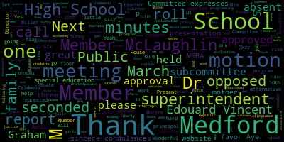
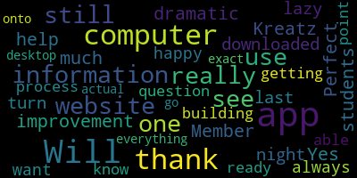
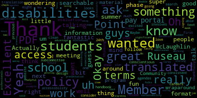

[Lungo-Koehn]: 1-309-205-3325, meeting ID 962512749821, prompted. Member Ruseau, if you could call the roll.
[yB-9Wmg_zjs_SPEAKER_00]: Member Graham.
[Kreatz]: Here.
[yB-9Wmg_zjs_SPEAKER_00]: Member Hays. Member Kreatz.
[Kreatz]: Here.
[yB-9Wmg_zjs_SPEAKER_00]: Member McLaughlin.
[Kreatz]: Here.
[yB-9Wmg_zjs_SPEAKER_00]: Member Mustone, absent. Member Ruseau, present. Mayor Lungo-Koehn.
[Lungo-Koehn]: Present. Six present, one absent. All please rise to salute the flag. Pledge allegiance to the flag of the United States of America, and to the Republic for which it stands, one nation under God, indivisible, with liberty and justice for all. We have the consent agenda, bills and payrolls, minutes from the fifth regular school committee meeting held on March 20th, 2023. Is there a motion on the floor?
[yB-9Wmg_zjs_SPEAKER_00]: Motion to approve.
[Lungo-Koehn]: I remember McLaughlin, seconded by member Rousseau. All those in favor? Aye. All those opposed? Consent agenda is approved. We have reports of subcommittees, minutes from evaluation subcommittee meeting held on March 27th, 2023. Member Hays.
[yB-9Wmg_zjs_SPEAKER_01]: Thank you. Yes, we met on the 27th and we were looking at, our two goals were to choose a evaluation template and to start looking at some instructions to go with the template. We first looked at the DESI's version of a template And then we also talked about whether to create our own template. Ultimately, we did decide to go with the DESI version this year. There was some discussion about some pages being overwhelming or there being a lot of information and maybe needing to highlight certain pieces of information. So we are going to go back and add that into the DESI template, highlighting the specific indicators that we are using this year. and we will be meeting again on April 21st, 24th, sorry, to finish that up and to finish up the instructions for members.
[Lungo-Koehn]: Great, thank you. Is there a motion on the floor for approval? Moved by Member McLaughlin, seconded by? Second. Member Graham, all those in favor? Aye. All those opposed? Minutes are approved. B, minutes from rules and policy subcommittee meeting held on March 28th, 2023. Member Rizzo.
[yB-9Wmg_zjs_SPEAKER_00]: Yes. One second. Just got to keep up with all the other things.
[McLaughlin]: Point of information. Point of information, Member McLaughlin. And just also that the next evaluation subcommittee meeting is the 24th?
[yB-9Wmg_zjs_SPEAKER_00]: Mayor, motion to table to the next meeting, and hopefully we actually have the minutes in our packets.
[Lungo-Koehn]: All those in favor? Aye. Opposed? Minutes are tabled. Number five, report of our superintendent, updates and comments. Dr. Marice Edouard-Vincent.
[SPEAKER_06]: Good evening. April is World Autism Awareness Month, and yesterday was Autism Awareness Day. I am proud that the Medford Public Schools, in collaboration with our Medford Police Department, have formed a partnership with the Doug Flutie Jr. Foundation, which helps families affected by autism to live their lives to the fullest. The autism message boards are an important part of our elementary school playgrounds. One is already posted at the Roberts Elementary School. An additional one will be placed at the McGlynn Elementary School as well. Let us light up our school community blue to support autism awareness and acceptance. I also have some great news to share. I'm so pleased to report that the Mustang ethics team placed third in the nation in the national ethics championship held in North Carolina this past weekend. They have worked so hard this year and under the direction of Mr. Esner, we are very proud of their accomplishments. And I just wanna say a large congratulations to our ethics team and thanking this committee for sending them to North Carolina, so I'll give them a round of applause. Congratulations. Additionally, on Saturday, our undefeated Mustang Winter Color Guard team competed at Salem High School in the championship finals and won their highest score of the season, a 96.59. Their performance was choreographed to music The guards used flags, sabers, rifles, along with dance that wowed the crowds. Congratulations to our winter color guard team. And special thanks to Ms. Rutter and Coach Gaffney. Congratulations to them as well. I also just wanna share a little news with CCSR. At the Andrews Middle School, Miss North CCSR Group began a pilot program working with EGOL, a Somerville-based company that supplies feminine products on a roll to try. The CCSR students will take the data to monitor usage and create a spreadsheet of the findings. Maintenance will soon install the units in the girls' bathrooms. In a month or so, CCSR hopes to present their data to the school committee and see if it is something the district may want to implement at all schools. Also, our third edition of Coloring Chords from the Fine Arts and Music Department is now available on our website. Please go and check that out. And a special thank you to Ms. Suzanne Fee and Haley Rallo, our coordinator of both Fine Arts and Performing Arts. When Mary Briana's egg hunt had to be moved indoors on Saturday due to the rainy weather, our JV softball team jumped in to help. They assisted the Easter bunny to decorate City Hall and helped him to hide eggs. They took photos of all of our students with the bunny, gave out cotton candy, and helped with the cleanup. I want to say a special thanks to Coach Brenna and the team for volunteering to help our community.
[Lungo-Koehn]: Sorry to interrupt. Not only did they come volunteer, the softball girls with the bunny, but they were the bunny.
[SPEAKER_06]: Oh, they were the bunny. So that's even better. Well, thank you to our wonderful students, community service and giving back. So I truly, truly am just proud and very, excited about the wonderful things that our Mustangs are doing. I wanted to share with the community that this past Friday, we had a fabulous Women's History Month celebration at the high school. And I just want to recognize all of the phenomenal women who came to present to our students. The auditorium was filled limited seating, but it was a wonderful presentation in celebration of women's history month. And this diverse group of women were from all different occupations, they encouraged our students to never doubt their dreams and urge them to seek a career that will bring them joy. The theme of the event was, if you can see her, you can be her. I'm glad that member McLaughlin was able to attend. And those that shared the stage with Mayor Brianna and myself include Chief Justice Kimberly Budd, Massachusetts Supreme Judicial Court. Congresswoman Catherine Clark, Democratic Minority Whip, thank you. Tiffany Chan from CBS4 Boston, news reporter. Dr. Jaime Chia, Director of Scientific Outreach, the Broad Institute. Paige Boldini, owner of Paige Aesthetics in Medford. Kelly Rose Sarno, owner of Declan's Mining Company. Dr. Asima Mohanty, Claire Booth, assistant professor, Tufts University, Department of Electrical and Computer Engineering. Luisa Flores, director, sales and marketing, Columbus Hospitality Group. and Commander Billy J. Farrell, the first female commander of the USS Constitution. I just want to say thank you again to all of those phenomenal women who came to Medford High School to share their stories and be positive role models for all of our students. I also just want to thank our community partners, Redmonds for providing flowers and light refreshments. Mr. Spagnola and our graphics art students who provided the programs. Mr. Hester and our media technology students who handled our media needs and videoed the event. custom made by Meg, who designed the gift bags for the speakers. And a special thanks to Assistant Principal Charose Walker and Lisa Evangelista, who organized the program. So thank you for making that event such a successful event. Also, I want to recognize our boys lacrosse team. So last week I mentioned a lot of the wonderful athletes, and I did not mention what happened with our boys lacrosse team. So our boys lacrosse team, they kicked off the spring sports season with a win over Laurel, with an eight to five score. The other spring teams who began this week are Girls Lacrosse, Boys Baseball, Girls Softball, Boys and Girls Tennis, Boys and Girls Outdoor Track, Boys Volleyball, Boys and Girls Crew. At the middle school, the teams that are now competing are Boys and Girls Outdoor Track and Boys and Girls Flag Football, Let's Go Mustangs. Also this weekend, Spotlight Productions presented Beauty and the Beast in our Caron Theater and they played and presented or performed to sold out audiences. A number of our students were in the cast and I heard them practicing. Spotlight provides a great resource for our community. Congratulations to all of them. I also want the community to know that registration is now open for our summer fun camp grades one to five, it will be held at the Mississauga elementary school and camp begins on July 5, and it's going to be led this year, again by Mr. Anthony And I thank you, Anthony, in advance for your continued commitment and dedication to our summer fun camp program. The weekly rates for this inclusive camp will be $200. There are no daily rates. The application is available on our website. And for any questions, please contact community schools at 781-393-2226. Also just a reminder, this coming Thursday is a large elementary fundraiser. The Harlem Wizards will be coming and all of our elementary PTOs are collaborating. It's going to be at Medford High School, this Thursday at 6pm. The gym doors will be open at six and the lizards will take to the court at 7pm. It is a fabulous family event. You don't want to miss out. So please come out and support all of our elementary PTOs. The money goes back to the schools and it's a great cause and a great time to enjoy a fun event with your family. Lastly, but also equally important in closing, Passover is starting this week, beginning at sundown on Wednesday. Easter will follow on Sunday. I would like to take this time to wish all of our families a joyful and blessed holiday season. As a final reminder, there was no school this Friday, April 7th, in observance of Good Friday. Wishing you all a happy holiday season. Thank you so much.
[Lungo-Koehn]: Thank you, Dr. Edwardson. We have presentation on the Medford Public Schools website and mobile app. Ms. Diane Caldwell, associate superintendent, Lisa Miller, programming and web development teacher in recognition of the following students for outstanding efforts on our Medford Public Schools website. Ms. Caldwell, welcome. The little person with the voice, if you touch, oh, there it goes. Mic's on.
[U1EIl_L-LWc_SPEAKER_00]: Thank you.
[Caldwell]: So thank you, Mayor Lungo-Koehn, members of the school committee, Superintendent Dr. Maurice Vincent, for having us here to provide you with what we think is a new, improved Medford Public Schools website. I'm going to start by doing some introductions and acknowledging the amazing people, students, staff, administrators, who helped make this website possible for us. And then the students will come up and say a few words, and Ms. Miller will also do a presentation, a demonstration of the website's special features. So first I wanted to talk to you about Molly Layden, who is our Director of Library, Media, and Technology. Molly was so instrumental in doing the research for us and trying to find a company that met Medford Public Schools' needs, as well as talking to the directors in the content areas. Medford vocational teacher of programming and web development, Lisa Miller. I have to say that her technology expertise is second to none. And if she wasn't with us, we wouldn't be standing in front of you today. So thank you to Ms. Miller. George Tufas is with us tonight. George, give us a wave. So some of you from City Hall might already know George because he's doing his internship here at Medford City Hall, and he actually helped launch Final Sight here, but he helped us first because we started with him a little bit ago, a few years ago. Kevin Gusmeo, Kevin, wave for us. Kevin is the team leader, the team manager in Ms. Miller's classroom. And he's sort of employed a couple of other students. And when pages come in to be edited or added or deleted, whatever it happens to be, Ms. Miller will say, Kevin, will you take care of this for us? So Kevin, thank you for your work. Daniel Skeppel is not with us tonight. Daniel is currently a freshman at the University of Massachusetts in Dartmouth. So Kevin, if you're watching, hello, and I'd like to acknowledge the work that you did on the website as well. Tenzing Lobden isn't here with us tonight, but I would like to acknowledge his work with us. But Babav Sani is here. Babav, give us a wave. And he's worked hard on the website this past year. I'd also like to just go down and I hope you can bear with me as I acknowledge other people, please. Obviously the school committee, we would not be able to have done all of our work without your cooperation and your collaboration. So thank you so much for what you've done for us. the administrators, starting with central administration with Dr. Vincent, but I don't know how many meetings I've had with Ms. Galussi, Dr. Cushing, and Joan Bowen herself will tell you, I was in her office numerous times. It was so important for me to make sure, especially for special education and pupil services, that what we put up on the website was correct information. So I'd like to thank you for your help with that. We have a posting team in Medford now. Each one of our schools has a posting person that takes care of the calendar for the school, as well as the school news. So I'd like to thank Jen Conte at the Brooks Elementary School, Allison Guilmette at the Missituk Elementary, Liza Goldman at the Roberts Elementary, Courtney Bell does work for us at both the McGlynn Elementary and the McGlynn Middle School, Azita Poli-Bacon at the Andrews Middle School, Rebecca McGinnis and Maria Dorsey at Medford High School, Medford Vocational and the Curtis Tufts School. So a big thank you to those teachers who have been working with us this past year. I'm not sure if you know Kat Darnell. She has worked to do the videos of each of the principals and the superintendent. So I'd like to thank Kat Darnell. Our CCSR students are everywhere, as you well know. So they did a lot of photos for us. Mr. Hesser and his class, I have a special place in my heart for them. We took the vocational bus or van out, and we went to each and every one of the schools, took photos, we used drones, which was really kind of fun, of the teachers, the administrators, so that we had updated pictures as well as of the inside and the outsides of the schools. Mr. Spagnola, once we had all our photos taken, Mr. Spagnola and Mr. John Spagnola and the classroom of students then took those pictures and cropped them and sent them off to Ms. Miller and her students to get onto our website. And I'll just say it one more time, this couldn't have been done without the assistance of Molly Layden and Lisa Miller. So again, thank you so much for what you have done for us.
[U1EIl_L-LWc_SPEAKER_00]: So I'm going to begin at the beginning.
[Caldwell]: Our goal, after we looked at the website, was to improve communication with our families, with students, staff, and the community by creating an informative, accessible, easy to navigate, and appealing website. We began the conversation around fall of 2021. I actually have to acknowledge Dave Murphy because I worked very closely with him and we would meet often to make sure we were on the right track. We looked at our website. We knew that it needed edits, updates. There were broken links. We needed to streamline. We looked at our resources. We needed navigation improvements. It had to be user-friendly. more appealing staff directory changes and, you know, oftentimes I would look at the staff directory if I could find it on the website. And there were people who were retired resigned and some who had passed away, and yet still were on the website. We needed to update our policies that you've been working on, current events information, delete obsolete information, get better images. But one thing I think that Lisa, Molly and I agreed upon is we wanted more of our students' pictures, photos on the website because it is all about them. So we were happy to get lots of photos. So that's where it began. We started our research. Ms. Layden was tasked to do this research. So on her technology listserv, she had discussions with her tech directors about reliability, accessibility, tech support. And so we came up with four different companies, edLeo, Educational Network, Catapult, and Finalsight. So our focus was to look at the designs that these four companies had. Maintenance was really important. As you well know that some of the maintenance wasn't happening with our old website. We wanted to keep it up to date. Accessibility was extremely important, whether it was for our EL families or for our special education families. We looked at news features, the payment system. We wanted to make sure that we had a consistent payment system. And right now we are using one, so I'm happy that we have BlueSnap on board. Social media feeds. So we looked at having two for the district and then two for each and every school. Cloud storage. forms integration, content management, and a mobile app, which I'm happy to say, we have our mobile app up and running. So you can go to your app store and for parents, they can, if you're looking just to go to the Roberts Elementary or the Andrews Middle School, you can put that on your mobile app now. After all of our research and discussions and Zooms and conversations with these companies, Final Sight was the company that could deliver everything we were looking for. So when we decided on Final Sight, we then went to the different districts to see what they looked like, North Andover, Hockington, Norton, and Brockton. And we decided that we would take the best from each of them and incorporate them into Medford Public Schools. So one of my favorite days was when we did the theme selection. George, Kevin, and Daniel were there. And Ms. Miller said to the students, well, you need to present to central administration and to the principals what your favorite theme is from final site. Not a problem for these young men. They got together and they chose what was good for them, what they liked. And they just get up, and I think there was a secret, I don't know if it, what did we use for a, not secret ballot. Was it Survey Monkey or something? Google Forms. So each of our administrators chose what they thought the best theme for Metro Public Schools was, and that's how we came up with what we have today. We were then, tasked with creating district and school sites. This wasn't easy because we were trying to take the information that we knew was important from our current site and then add information to that. I was working with the superintendent and the assistant superintendents on a regular basis and with all the principals to discuss what they wanted their school site to look like. So my thanks obviously go to Ms. Galusi, Ms. Bowen, and Dr. Cushing once again for that. One thing we didn't know when we started this project, or at least I'll speak for myself, one thing I didn't know was that we had eight additional websites within Medford Public Schools, and I was really surprised by that. One of them is an amazing website created by a student, the CCSR website. If you take a look at that, one of our kids did that from a few years ago. That is still up and running. Our athletics website is still up and running and we decided that that would be in our phase two because it was too much to put in for this current year. But the counseling had a website, the Metro Family Network, the speech and language, a lot of different websites. So we were able to fold in those websites for the most part into the new Metro Public Schools website. One of the interesting things last summer with especially George and Kevin was, we were working throughout the summer, and George goes to Greece every summer with his family who are here, so thank you for being here. So we gave George work to do, but we didn't expect him to do a lot, it was his vacation. But he would email, text, let us know, okay, I'm done with that, what else do you need me to do? And this was during his vacation. And Kevin went to, was it Acapulco or Mexico, and then he went to Florida. And in the middle of his vacation, he would email Ms. Miller and myself and say, I'm done with this project, what's next? So the boys, have gone above and beyond. And for me, this is so amazing. So thanks so much, guys, for doing what you do. We still have ongoing work on the staff directory that needs to be updated four times a year. We need to edit our content areas, which we're constantly doing now. creating easy to find school committee agendas, archived information. I don't know about you, but anytime I tried to find out what was going on in the school committee, it took me probably five to eight minutes. And now it doesn't anymore because you have your own tab. You just click on it and it says agenda and we get right to the minutes after that. So I'm happy that at least I can get continued, even though I'm not really here, I've retired, I can, I still watch school committee meetings. So, and our consistent payment system to me was really important as well. So, I thank you for your time for me. And now I'd like to take a moment to introduce Kevin, who's going to begin with accessibility. Come on up, Kevin.
[SPEAKER_00]: Before I start, I just wanted to thank Ms. Miller, Ms. Codwell, and Ms. Layden for their opportunity that they gave me to work on this website. So I'm Kevin. I'm a senior in the programming and web development shop. I'm also the student manager of the website. To me, the most important aspect of this website has been accessibility. And it's something that we have prioritized. So this school district is a very diverse school district. And with that respectfully, there's a lot of languages being spoken by students, faculty, and parents. So it was of utmost importance to us that we make the website multilingual. And that's what we did. And we do that through WEGLOC, which is a translation service built into our website. It's very easy to use. You just click on the language that you want to be translated and the page gets translated. I also wanted to mention too that our website is screen reader friendly. Every link has a title, every image has an alt text, and we pull text out of images so that they can be screen read and translated. Thank you for your time.
[Caldwell]: I've been neglected to mention he's going to the UMass Lowell in the fall. Thank you, Kevin. Vavav, can you come up, please? Vavav was interested in communication.
[Saini]: Hello, my name is Vavav Saini, and I also want to thank Ms. Caldwell and Ms. Miller for giving me the opportunity to work on their website. I'm a senior at the program web development shop in Bedford High School, and what I learned and love about the website work is communication. I think I learned how to email more professionally, communicate with people in person online, and how to convey messages in various types of posts. I think communication is a very valuable skills because you can really change the outcome of new posts comes out or just talking to someone. Thank you for your time.
[Caldwell]: And Baboff is off to the University of Mass in Boston, correct?
[U1EIl_L-LWc_SPEAKER_00]: Yes. Good. George, come on up.
[SPEAKER_07]: Hello. Before I start, I want to thank Ms. Miller and Ms. Caldwell for the opportunity they gave me to work on the website. Hello. I'm George Tufas. If you didn't know already, I worked at Medford City Hall as a website intern. And me and the mayor's office team successfully launched, redesigned, and published the website for Medford City Hall. My favorite part of working at Medford Public Schools website was going down with Ms. Caldwell to different departments and basically sitting with them. going through their part of the page as part of their site and seeing if information needed to go away or we have to put more new information in. It was basically a one-on-one and it made the process more easier, more friendlier for the department head. Thank you for your time. And once again, thank you, Ms. Caldwell and Ms. Miller.
[Caldwell]: George is off to UMass, Lowell next year as well. I think they underplay who they really are because when work comes into Ms. Miller, because that's where it comes, she just gives it to the students and they know what to do at this point. And I know Ms. Miller is working on hopefully continuing this process in the following. All right, Ms. Miller, would you please come up and do a demonstration?
[SPEAKER_04]: mind. That was great. Thank you. So I would like to first thank Miss Caldwell. I'm sure that building a website was not her retirement plan. And she has stepped up and gone way beyond all, you know, I don't know, we had high expectations. So not, you know, but I think she's done a phenomenal job, and it's been really a pleasure working with her. And it's, it's been fun to see you grow as a website developer. I'd also like to just say thank you to the students. I also think that they are rather humble. They have done a phenomenal job. They are some of the most professional web developers I've worked with at this point. I have complete confidence in them. When something comes in, I'll say, oh, just send an email to so-and-so. And they've really just stepped up to the task. They take their responsibilities extremely seriously and address things like the accessibility issues, making sure that all the images have alt text and that sort of thing. So I have really been impressed and I'm a very proud teacher of them. So with that, I'd like to just go ahead and highlight a couple of the features of the website. I'm hoping that most people here have already seen the website, but it is structured differently than websites that we've had in the past in the sense that there is the district site and then each school has its own site that can be accessed through the top navigation. The design of the website is such that each school has its own website and the district has a website, but it's all a similar design so that there's a consistency across the site. So you feel like you haven't really left the site, but each school has its own photos. The homepage has the slideshow. The quick links, these would be the same for all but things for like school meals, everybody checks the school meals. That's one of our, our big sites. We have a video of the principals and then the news and the calendar. It's been really great having people at the schools, posting news, updating the school calendars, having these up to date. And I'm hoping that it's been a service to the community. One of the things that I think is really important about the website, as Caldwell mentioned this, The staff directory, we do have a staff directory that the staff information is stored in a database. We can come here under the about go to staff directory. This would be the entire staff directory that can be filtered based on school or department name, but that same information we use to Actually, this would just be the high school. If it was on the district, it would be the entire district. The schools have theirs, as well as each department or the nursing staff. And it all is pulled from the same database. So we're really hoping that we don't have that obsolete information where some random name gets left or part of the site gets updated, but another part doesn't, because we're working off a common database for the directories. It has you know all of the academics and departments and stuff one of the things so that I wanted to, I'm not going to go through all of the website but there's a couple things I wanted to highlight, because I find. One of the things I've really enjoyed seeing is that the website get used more and more. And so we've had ideas come in from the community of staff at the schools. And so I just want to go to the district. And so one of the things that I think is great is Suzanne Fee has come up with the idea of having art galleries at each of the schools. And so we now have And we were able to accommodate this, the students implemented this, then trained Ms., you know, gave a, did some professional development for Ms. P about how to actually add all the images. So each gallery, each school has a gallery. If we were to go to the high school, there are different collections that can be viewed. If we wanted to look at the most recent one. So this is an idea that I think is wonderful because people have seen the website and have said, ah, that's great. And people are using it. What could I do to add to that? And so this would be, I think, a great example of that happening. We also have a nursing blog now. So the nursing staff approached us and said, could we do something, have a monthly nursing blog? And so now we have, come down here.
[Miller]: Is it? There's an emergency out there. Where do we put the nursing blog? Is it?
[SPEAKER_04]: I thought it was under health services, but I know Kevin will know. Is it student life, or do you know where the nursing blog went?
[U1EIl_L-LWc_SPEAKER_00]: Yeah, so I thought it was under, yeah.
[SPEAKER_04]: Anyway, the idea is really that people are seeing the website and thinking about what can be added to it, and I've been really inspired by that. I think we're going to go ahead and go. Thanks, Kevin. I'm going to go back to the slide presentation, because there's a little bit of information I wanted to share. Some of the things like scholarships, we've been working with guidance, and they've said, you know, like, well, we could put the scholarship information there or community service information. So we use the boards to do that. students are doing that as well. And then I just wanted to show you the Google Analytics from the website usage. The one on the upper right is for the last year. You can see it's fairly flat, flat, flat until about August when we launched. And that's when you kind of get the as George says, the heartbeat going up and down. It is used a lot more during weekdays and weekends, so that's kind of where the up and down comes from. You can see that there's been 114,000 visitors to the website. in the last year. If you look at the lower one, I don't know if you can see it with the captions over it, but that is a 10-day period. Typically on a given school day, slightly over 1,000 people a day visit the website. It's lower than that, usually around 500 on the weekends. The most visited pages are the homepage, school brains, the printable school calendar, breakfast and lunch menu, staff portal, and staff directory. are currently most visited pages. And then as Ms. Caldwell said, the very newest thing that just happened is the mobile app is now available. It's done through final site as well. It is an app that pulls data from the website. So when we post news, it automatically gets pulled into the app. When we post events on the calendar, it automatically gets pulled into the app. There's also links to the website for things like, the lunch menu and stuff. It is just available, I think last Thursday was the first day, it is available both in the Play Store and the App Store. There might be some quirks to it still, it's new and there's a couple things we need to work on with Final Sight, but it is available for download right now. One of the things that's really nice is you're able to filter by school. So if you have a student at the Missittuck and the high school, you'll just get them, you can filter it. So you just get the information from the Missittuck and the high school. So that's been very exciting. And then there's all the thank yous. And I think Ms. Caldwell has already done that. So I would like to thank you for listening and a wonderful website team here.
[Lungo-Koehn]: Member McLaughlin?
[McLaughlin]: Actually, Member Ruseau was first, if you don't mind. Member Ruseau?
[yB-9Wmg_zjs_SPEAKER_00]: Thank you. This is great. As soon as it was available, I was all over it. I'm very happy. Thank you. I'm curious, what are the big outstanding challenges? In particular, I'm wondering about how we implemented search. You know, is it just all Google? And is it connected to everything properly? Because I know that Google sells a lot of stuff and nothing's cheap from Google.
[SPEAKER_04]: So we are using a final site search.
[yB-9Wmg_zjs_SPEAKER_00]: So like, if I, if somebody creates a Google Doc, and it's just automatically available through final site search, how do... So if you had a link in a post that was to a Google Doc, Yeah, I'm just thinking about, for instance, the example of the school committee agendas. Google Docs are used to create the agendas. Do they all have to be published and uploaded into the cloud for final site to even know they exist?
[SPEAKER_04]: So I think that we're posting everything as PDFs right now. So the agendas are PDFs. So those aren't really searchable.
[yB-9Wmg_zjs_SPEAKER_00]: That was my question, really. Is it not searchable?
[SPEAKER_04]: So the agendas are not really searchable, I think. PDFs are sort of going through a transition time right now where there are some PDF formats that are a little bit more searchable than others. But in general, we don't think of them as searchable. So the agendas would not be, but if it was deemed something important, we could tag them with certain categories or tags if there was like certain things we wanted that we then would be able to search for through the final site search on the website.
[yB-9Wmg_zjs_SPEAKER_00]: It's a lot of work.
[SPEAKER_04]: Well, I mean, it's, somebody would have to tell, we wouldn't probably do it ourselves. Somebody would have to say, oh, this should be tagged.
[yB-9Wmg_zjs_SPEAKER_00]: But like all of tonight's many PDFs won't be, like if you went to the search, you won't find anything that's in there.
[SPEAKER_04]: You wouldn't find the content. Like if you were looking for, if there, you know, if the word banana was in one of the documents and you search for banana, you wouldn't find that document. Great.
[yB-9Wmg_zjs_SPEAKER_00]: Thank you.
[SPEAKER_04]: Did you want to?
[yB-9Wmg_zjs_SPEAKER_00]: Um, I, I don't actually know what I want. I think that, you know, you know, there's obviously a hazard of connecting a search tool directly up to all of our Google accounts. That could be you know, you're trying to draft something and somebody can just search and read the next school committee agenda before you've even published it or something.
[SPEAKER_04]: But um, yeah, so I think that that's not going to happen. I mean, the other thing in this is separate than from the school committee stuff. If we're getting information for news posts, If there's information like the date and the time and the location that's embedded in a PDF or a JPEG image, the students will usually pull that information out, display the image, have that important text underneath it so that it can be translated using our translation tools, screen read for somebody who's using a screen reader, and it's searchable then using the search tool on the website.
[McLaughlin]: Thank you. Member McLaughlin. Thank you. This looks really great. I love the clean design. It's really, and I'm super excited about the accessibility and the all text and all that. So thank you guys very much for being so conscientious about that. And I guess I'm wondering, does that, so to member Ruseau's point about the PDFs. So if the agendas are not in a searchable PDF format, are they not able to be translated?
[Lungo-Koehn]: That's right.
[McLaughlin]: Yeah. So then we might want to think about that just in terms of translation access, because it's actually one of the things we were talking about at a previous meeting about having our materials translated. So I don't know what that involves, but it's just something to consider because it is something that we've been talking about in terms of, and so is that the same for policy? So the policy handbook, is that a PDF as well, or is that searchable?
[SPEAKER_04]: I am not sure about that, I'd have to check.
[McLaughlin]: Okay, if we could, that would be great. Because same thing, I think if people want to know what policy is on something, if they could search for it, that's great, and or have it translated is fantastic.
[SPEAKER_04]: Yeah, I agree. And I would love to see going forward there being more of a district wide strategy about documents, being able to be translated, being able to be screen read. Yeah, have a consistent format that we would like to use. So I would love to work with anybody who would like to do that.
[McLaughlin]: Okay, so then. Okay, thank you. So it's really about thinking about how to be consistent with the format.
[SPEAKER_04]: Yeah, it sounds like okay, and and having that format be one that we can use for screen readers and translation.
[McLaughlin]: Oh, good. All right. Maybe that's something we can talk about is in terms of policy, um, around that. So thank you. And then, um, I wanted to ask, so since all of these fantastic students are going on to, uh, their next careers and thankfully with the website that they can show for the work that they've been doing on their, uh, resume, which is excellent. Uh, I'm wondering about sustainability and the plan for the future. I know that you said that there's a phase, additional phases. that you're working on. So if you guys wouldn't mind sharing a little bit about that.
[SPEAKER_04]: Yeah. So I think, I mean, part of this will be depend on the director of communications and how that role plays out. I am currently trying to recruit some students, train them this year, have them be involved in training, providing guidance to some younger students who will then take over at least the student website team aspect. I think that we need to work on, you know, will the, Schools continue to be able to have people in them that can post news and update their calendars. So that would be something that hopefully we can move, you know, can continue next year. There are bigger tasks, things like, do we want to use the final site module for athletics? That's a separate module. There'd be separate costs. Currently, we have not really fully incorporated athletics into the website. So that would be something that we could consider. but there is cost and time. Somebody has to do it, there's a cost to final site.
[McLaughlin]: Thank you for mentioning that because that made me wonder also, I wanted to just ask about the pay portal. So does that, what does that pay portal work for? So would that work for, for example, like the summer fun camp when people are signing up for summer fun? Yeah, great.
[SPEAKER_04]: So we currently, I think that they're just starting to use it for some of the MBTA passes through the high school. They used it for- Athletics has been used.
[McLaughlin]: Oh, athletics is using. Oh, good. Yeah.
[SPEAKER_04]: So that's, that is that aspect of athletics is, is happening.
[McLaughlin]: Community schools.
[SPEAKER_04]: Not yet. The AP exams were paid for through the pay portal and summer school.
[Lungo-Koehn]: Okay.
[McLaughlin]: Will community schools be added? Do we know for the pay portal?
[Caldwell]: We can look into that.
[McLaughlin]: Yeah. Thank you. Excellent. Excellent job. You guys. Thank you.
[kZGTRaqmFyM_SPEAKER_05]: Member Graham. Thank you. Yeah, I think there's a lot of places where if we are going to adopt a pay portal like presuming that it has all the appropriate safeguards in place that we should be looking at all the places where we ask families to send money. like lost library books, cash flows in to the library. And I think it has to go to city hall to come back to be able to buy and replace the book. So I'm hoping that if we can really get to a single pay portal for everything that has to do with our schools, it would, it would be a really glorious day for everybody, I think, because I think parents just are like, where do you want me to go? What do you want me to do? It would be nice if all of that stuff was in one place. So, and I think on the topic of athletics that was that was a list on my list of questions for you all. I would like to see athletics be pulled into the mainstream of this website. I think athletics is a critical part of what we do at Medford Public Schools. And lots of people want to know about our athletics teams, not just our athletics teams, by the way, all the teams that we have, all of our extracurriculars, but it's really sort of hard to find them right now. And the track team was here a few weeks ago and in going back and forth, the coach has done a really wonderful job maintaining his own website for the track team, which is great, but that is a ton of work on him that is over and above all of his other coaching responsibilities. So I'd like to see there be a better mechanism for the athletics teams and any of the teams that have a lot of activity to be able to tell the community what they're all about on a website that could be something that meets their needs. So I do think that is worth looking into, not just for athletics, but for athletics in any of the clubs like the ethics team and all the others. And then I guess my final question is whether you have found and decommissioned all of the other versions of the website, because every now and then I go searching for something, and I land somewhere that's quite old. So I'm just curious, how can we shut them down in a permanent way so that there's only one place to go?
[SPEAKER_04]: So as you've noticed, they are not decommissioned completely. They are redirected to our website, but some of those deep buried documents still show up. And so I think that that, you know, there's been a while where we've been a little bit hesitant, especially early on, because we weren't sure if there were still documents there that we needed access to. I think probably the time has come that we should be permissioned.
[kZGTRaqmFyM_SPEAKER_05]: Every now and then, I land on an old website. I'm like, how did I get here? I didn't think I was looking for anything that obscure but I think to my colleague's point, the last thing I'll say is we get a lot of questions about how to find school committee documents. So, I will put a resolution on the agenda for us to think about at a future meeting in terms of how we can be better connected to the work that you all are doing and start to address some of the feedback that we get about how to find our documents, where to go, you know, and sort of all of those, that sort of realm of questions that we get from the community. So I will do that for a future meeting. That'd be great.
[SPEAKER_04]: We would love to work with you. We tried to take the content from the old site, organize it the best we could, but it's a lot. I think that it would be great to work with you and to be able to move it even farther forward.
[SPEAKER_04]: Thank you.
[Kreatz]: Member Kreatz? Yes, thank you very much and thank you to the students for all your help and it's it's really it's a it's dramatic improvement from the other website. So I downloaded the app last night and I'm very lazy. I don't like to turn my computer on. I always want to use an app. So I was really happy to see that. And I just had one question. Will we be able to see all the same information on the app? I know you're still in the process of building it and getting it ready. So at one point, will you have to, can you use the app for everything or will you have to still go on the website onto a computer? Will they have the same exact information, the app and the actual computer or desktop?
[SPEAKER_04]: So the app will only have access to the staff directory, the news, the events, and links to special sites that we've highlighted, like school grades, lunch menu. The website, though, is responsive. And so if you were to go into your web browser on your phone, you would have access to the full website. And so it's not going to pull in all of the hundreds of pages that are on the website. It just highlights those things that are sort of changing, like I said, events and calendar stuff and lunch menus. But one of the things that we've tried very hard to do is make sure that the website is responsive and looks good on all screen sizes.
[Lungo-Koehn]: Thank you. Thank you very much. Thank you. Thank you, thank you for your hard work.
[Caldwell]: At some point, Mayor, we'd like to get a photo of the school committee without their masks on, because what I have, what we have is you with your mask, so we could do that tonight if you would like.
[Lungo-Koehn]: With the gentleman that helps with the website, I think there'll be a great picture. Oh, Mia's not here. Oh, Mia's not here. Yeah, we'll do that anyway. Yes. Gotcha. Okay. just going to do it now. So thank you gentlemen for all your hard work. I'm going to turn it over to the superintendent. We have citations for you. There's a way to say thank you.
[SPEAKER_06]: Yes, so we are really, really excited and I want to recognize you officially. First, your two members of the team that are in absentia, Daniel Skeppel and Tenzing lobbed in so we know that they can't be with us today but we still wanted to recognize them officially. And we have certificates. So the first certificate that I will read certificate of recognition. This certificate is proudly presented for your extraordinary contributions to our district website. Kevin Guzmayo, we are celebrating you because you did more, did it better and always exceeded our expectations. And so it's signed by the school committee and myself, the superintendent of schools. We wanna thank you so much. Ms. Caldwell, Ms. Layden and Ms. Miller as well. So you'll each get a certificate. Kevin Guzmayo, George Tufas, and Babar Sani. Please come forward.
[Miller]: It's not really the time.
[Lungo-Koehn]: Next up we have recommendation to approve submission of Massachusetts School Building Authority, MSBA core program statement of interest, SOI application. Dr. Marice Edouard-Vincent, superintendent.
[SPEAKER_06]: Good evening again. As you know, last year we went through a very intensive process. And unfortunately at the end of that process. We weren't able to advance to the next phase. The time has come, and we are reapplying as a district to MSBA the Massachusetts school building authority for the core program and we are resubmitting our statement of interest. And so I come before this body. As an official requirement to ask you to support our statement of interest to the MSBA core program. And I attach the additional communication that we also shared with the Medford City Council, and I am expected to go before their body next week on Tuesday, April 11 2023. and the deadline for resubmission to MSBA is next week as well on April 14th.
[Lungo-Koehn]: Motion to approve. Thank you, Dr. Edward-Vinson. Motion for approval by Member McLaughlin, seconded by Member Cresson-Hayes. Roll call, please. Before the roll call, I just want to let everyone know I've been to the State House four times over the last 30 or so days to meet with each president, one of the Senate, one of the House, and both speakers to have in my job, each mayor had a little job. Mine was for MSBA funding and Chapter 70, so local aid. So I'm trying on my end, so let's just, yeah, pray on this one.
[SPEAKER_06]: I also would just like to invite any of the members who would like to come join me next week when I present the MSBA to the council. If your schedule permits, you're more than welcome to be part of that official request because we need a vote from the city council as well. Thank you.
[Lungo-Koehn]: Thanks, and I hope that, I'm sure that will go very smoothly MSBA likes to see that the whole city government is supportive of this and excited to move forward and ready and willing to ask our residents to support this endeavor. So I'm sure that will go wonderfully. Roll call vote, please.
[yB-9Wmg_zjs_SPEAKER_00]: Thank you, Mayor, for your work and Superintendent as well. I know it feels like we keep trying, but we will keep trying. Member Graham?
[kZGTRaqmFyM_SPEAKER_05]: Yes.
[yB-9Wmg_zjs_SPEAKER_00]: Member Hays? Member Kreatz?
[kZGTRaqmFyM_SPEAKER_05]: Yes.
[yB-9Wmg_zjs_SPEAKER_00]: Member McLaughlin?
[kZGTRaqmFyM_SPEAKER_05]: Yes.
[yB-9Wmg_zjs_SPEAKER_00]: Member Mustone, absent. Member Ruseau, yes. Mayor Lungo-Koehn?
[Lungo-Koehn]: Yes, 16 affirmative, one absent. Motion is approved. Next up, we have the report on the three Medford Public School principal searches and timetables. Dr. Edouard-Vincent again, our superintendent.
[SPEAKER_06]: Yes, good afternoon, or good evening, I should say. So this presentation right now is to just share that we are at a crossroads where we have three principalships available or open at the same exact time. And so we have the Roberts Elementary School, we have the Andrews Middle School, and we have Medford High School. So we have posted all three jobs and the application process is open for all of the schools until Friday, April, or until April 5th, excuse me, Wednesday, April 5th. We had families or members of the community, parents and caregivers sign up, and every single school community has an interviewing team that has been selected. And we have three members of this body, which have also stood up to the plate to say that they will support the principal searches. We have member Graham who will be supporting and part of the high school team. We have member Hays who will be supporting and part of the elementary school team at the Roberts and we have member McLaughlin who will be supporting the Andrews Middle School team. So I wanna thank all three of you in advance for your sacrifice of time and your support of this critically important work that we're going to undertake. I also want to just share the aggressive timetable that we're going to be working with, where this week again. We have no school on Friday, the applications window will close this week. Next week, during phase one, the interviewing teams that were selected, which include parents, teachers, administrators, school committee members, and we have central office members of the team that are supporting each search. So at the Roberts Elementary School, we have Assistant Superintendent, Suzanne Galussi and Principal Kathy Kaye supporting that process. At the Andrews Middle School, we have our Director of Student Services, Ms. Joan Bowen and Principal Nick Tucci, spearheading that search. And at the high school, we have Dr. Peter Cushing and Dr. Bernadette Riccardelli, the administrators from the central office team that will be spearheading the high school search. During phase one again, as I said, applications the window will close on April, April 5. And during the week of April 10, the week prior to vacation, during phase one, the interviewing teams will be screening and looking at resumes and selecting the candidates for first rounds interviews. During the week of April 17th, we have April vacation break, so school will not be in session. Immediately following break, the week of April 24th at the high school level, the finalists that were recommended by the interviewing teams, each interviewing team will put forward three candidates that they feel are viable candidates to lead the school. And based on those three candidates, when it moves to phase two, the superintendent will be involved at that point. And these are three candidates that they can feel are viable. And we will move into phase two and conduct finalist interviews based on the final candidates that were presented from the interviewing team. It's critically important during phase one that all people who are selected to be part of the interviewing teams that confidentiality is truly maintained, because some of the candidates, the majority of them will most likely be. sitting principals in current districts, and so if they do not move forward to the next phase, then we would not be publicizing that information. Also, sometimes when the information is made public, sometimes it can backfire too early. And so, you know, your respective team leads will definitely fill in each interviewing team about the importance of maintaining confidentiality. So that's critically important. The week of April 24 for the high school search team, we will be conducting finalist interviews during that week, with the hope of announcing who the new high school principal will be during the week of May 1. Simultaneously during the week of May 1st, I will be conducting finalist interviews for the Andrews Middle School. So there's like an overlap that is taking place. And again, based on those finalist interviews and moving forward from that week of May 1st, the hope is to announce the middle school principal the week of May 8th, the following week. At the same time, the week of May 8th, I will be conducting the elementary school interviews for the next elementary school leader. And so the week of May 15th, the hope is to announce the new elementary school principal the week of May 15th. So prior to Memorial Day weekend, we would like to have all of the new principals assigned and that information made public. and look forward to transitioning with new leaders on July 1, 2023. We're trying to do a very aggressive timetable because we do know that there are multiple searches happening in neighboring communities, and if we find someone that's really viable and good, a good match for Medford, we don't want to delay that process. The other piece that I just wanted to share with the community and the team, that as the interviewing teams were selected, we really tried to make sure that we were truly inclusive of all of our populations, making sure that we had English learner representation and students with disabilities representation, whether it was students or parents representing the diverse population. that we have if it's the vocational at the high school to make sure that we have CTE representation, as well as the comprehensive side. So we did take that into consideration at every single level, so that we're hearing from different stakeholders, different voices in different perspectives. And I want to thank all of those who volunteered in advance for being part of this critically important process. And for those that might not have been selected to be part of the official team, we are going to be creating other opportunities to continue to gather feedback and input from our communities, all three communities. So I just wanted to give the committee that overview and we do have some beautiful programs or flyers which describe each school community and describe the population and just key facts about the different schools and that we are tapping into other resources and partnering with community partners to be able to get the strongest amount of candidates who are interested and would be a good match for Medford to apply. So I look forward to, it's a very intense process, but I look forward to it. And I thank again, the committee for your support during these three principal searches that are gonna be taking place very soon.
[Lungo-Koehn]: Thank you. Thank you, Dr. Edouard-Vincent and you don't have to tell us names or anything but do we have a candidate resumes coming in.
[SPEAKER_06]: Yes, we do. We have a good amount. The hope is that each, during phase one, they will be able to come down with at least five candidates that they feel we're having good interest. And I've spoken with many colleagues to let them know that we are looking. So I think people will be able to make some good choices.
[Lungo-Koehn]: Wonderful, thank you. And thank you to all that are serving on those committees to help us bring in three great principals. We do not have any presentations of the public or continued business. We do have a reports requested, which is presentation of data for the before and after school program. Ms. Megan Fidler-Carey, Director of Family and Community Engagement requested by myself to be presented tonight from the March 20th, 2023 meeting.
[SPEAKER_06]: Yes, and miss for the carry is online. So, Dr. Cushing. Thank you. She's a co host now. Perfect. Thank you.
[CrEp94TD4IM_SPEAKER_18]: Hello. Well, thank you for letting me chime in by zoom. Um, so you had asked in my presentation last at the last meeting, it was more of an update about sort of the state of the program. And then I had proposed some changes to the tuition rate and the pay rates for the staff. And then the questions that came back after that were, you know how wanting to make sure that our Families that maybe couldn't afford an increase in tuition were taken care of. So we wanted a more comprehensive report on the financial assistance plan that we have that we've been doing this year and what and to make sure it would still be viable next year with the increases that we've proposed. So you all should have received a report from me. I understand that there was a two-page written report, but then there were supporting documents. And I realized this morning that the supporting documents hadn't gone out, but hopefully those have been mailed to you since then. Did you get those?
[SPEAKER_06]: Yes, we have received the completed packet, the updated packet. Thank you.
[CrEp94TD4IM_SPEAKER_18]: Oh, terrific. Good. OK, so you'll note in the packet, hopefully you had a chance to go through it, that this year we instituted the new financial assistance plan using the self income, the self the income self reporting grid that the the office at City Hall uses for the Community Development Block Grant. which is what their determination for low income for Medford residents is. So we realized it made sense to keep consistent if there were low income determinations in one body of the municipality, we should keep it consistent through the schools too. So we use the same grid. And based on where, you know, once families send us supporting documents for their paycheck stubs and their tax documents, depending where they fall on that grid, they're eligible for 20, 40, or 60% off of the full price of the tuition. So we had 27 students take advantage of that option this year. And we also had seven students who were legacied in from the voucher program from the year before. So I'll take a step back. You'll recall about a year ago, we presented to school committee and requested doing away with the voucher system, meaning not renewing our contract with the state. to accept vouchers. And the reason we did that was because not enough of our families were taking advantage of the voucher program. In fact, we only had 12 last year and we only have seven that are still carried over to this year. And it was a very cumbersome process to be eligible to accept those vouchers. So for the very few families that were taking advantage of it and for how cumbersome it was, it wasn't worth it. Plus the fact that it meant that a lot of families who didn't necessarily qualify for voucher for whatever reason, had no means of getting financial assistance because we were only allowed to charge as much as voucher reimbursed us for. So it made financial sense to be able to help out more families by not accepting vouchers. And it was a lot less of a burden for us to go through that process. But we decided to legacy in the families who had already been getting vouchers and honor their parents. It's called the parent copay. That's what it's called on their voucher system. So whatever rate they were quoted by the state, we honored that. So regardless of where they fell in that 20, 40 or 60 percent. So the 26 students receiving the discounted tuition and the seven voucher rate students represents about 10% of our total registered students in the before and after school programs. So when we went through the process of making sure that this would be viable, making sure that raising our pay rates and raising the tuition rates as much as we suggested that if we still gave all of those discounts, we'd still be viable. And if you look at the packet, we've proven that it definitely is. We will end up in the black. So the way that I went about doing this was I just took the most conservative, I worked, first of all, I worked with Michelle Kingdon in the finance office, and I worked with Suzanne Galusi, the assistant superintendent of academics. And we worked on this together sort of untangling the different scenarios different ways to look at it and took the most conservative approach we could think of, which was this. i'm uncomfortable with that only 10% of our families are taking advantage of our financial assistance, because I think. Either there are more families who are eligible who don't realize they're eligible or see some sort of stigma for applying for it, or there are families that didn't sign up for before and after school in the first place because they didn't know that we had financial assistance. So I see that as a challenge and a goal for myself for the rest of this year and for the summer to do a better job of educating and informing our families so that they know that this is an option for them. So with that said, I'm hoping, I mean, my very, very aggressive goal is to get to 25% of eligible families or eligible students. So the conservative way that we looked at these numbers was to suggest that 25% are Let's say we get $0 for 25%, which is not going to happen. That's not possible. But that was the way that we could look at the numbers, the dollar numbers, the most conservatively to make sure that we would end up in the black. So if you have your report in front of you and you look at page two, You'll see all the costs as I listed them on the slide, on slide number 10 at the last school committee. And those are the new personnel costs with the increases that I suggested, and our costs for supplies, administrative personnel, the wraparound professionals that we talked about last year and at the last meeting, and our office of community program manager. So with all of those costs, and with the conservative income of full price only for 75% of our eligible seats, we still come out in the black. So I'm comfortable with the pay rate increases that we've proposed, and I'm comfortable with the tuition pay rate that we've proposed. I think it is enough to cover our costs. and be able to offer financial assistance to even more students than we currently are. So I'll take a breath and see if we have any questions from there.
[Lungo-Koehn]: Member McLaughlin.
[McLaughlin]: Thank you. Thank you for the presentation, Ms. Fidler-Carey. I just wanted to ask, especially around the percentage of folks who are taking advantage of the discounted tuition, what have you, is any of this material translated?
[CrEp94TD4IM_SPEAKER_18]: Yes. Yes. So you'll see the letter that I sent out to families, the body of that letter. So that should be the third page in your packet. And this was the amended packet that we sent today. Okay, so the body of that letter that I sent in July, I sent that to all families through talking points as well. And it said, the body of that letter, and it said, for more information, please contact the office, which some families did. I love talking points. And I, so I immediately, once we got talking points and our enrollment was set, I set up, you can set up different groups at each of the schools. So I have a group for before school, a group for after school, and that's how I communicate kind of emergency snow information. That's how I communicate when, you know, if there's anything coming up that they need to know about.
[McLaughlin]: Thank you, Mayor. May I follow up? Yeah, thank you, that's super helpful. And then I just wanted to ask on the page two for the wraparound professionals, I know that we did talk about this a little bit last week as well, but I just wanted to double check on the inclusivity for students with disabilities and with significant disabilities for the before school and after school program with the budget line item for the wraparound paraprofessionals, is that permitting more opportunity for students with disabilities to be attending these programs?
[CrEp94TD4IM_SPEAKER_18]: Yes, I believe it could, especially if the qualified paras are the ones applying for that wraparound role. So again, the wraparound professionals are in that shifted schedule. They're from 11 to 5. So if that works for them, which I anticipate that that will be very beneficial for a lot of people because like me, if they don't have their early mornings free, then it might be a better fit for them to have an 11 to five job than a school hours job. So I'm anticipating some paras. So especially if we're lucky or convincing to find paras that meet the need that are qualified, then we can certainly open it up in that way.
[McLaughlin]: Thank you. And then just as a follow-up, I guess what I'm asking too is that It's not opening it up to students with disabilities. I mean, students with disabilities have access to the programming regardless, right? So we are just finding the staffing to ensure that they have access.
[CrEp94TD4IM_SPEAKER_18]: Correct, yes.
[McLaughlin]: Thank you.
[Lungo-Koehn]: Member Graham.
[kZGTRaqmFyM_SPEAKER_05]: I'd like to make a motion to approve the staff increases and the tuition rate increases.
[Lungo-Koehn]: Motion for approval by Member Graham, seconded by Member McLaughlin. All those in favor? All those opposed, motion passes six in the affirmative, one absent. Thank you, Ms. Fidelicari.
[CrEp94TD4IM_SPEAKER_18]: Thank you. Thank you very much. I very much appreciate it.
[Lungo-Koehn]: Number 10, we have two, three condolences. The Medford School Committee expresses its sincere condolences to the family of Sally C. Tardif, mother of Medford High School, Medford Vocational Technical High School, Special Education, ETL, Amy Delano, and former assistant director of the Medford Voc Tech High School, Jill Sawyer. The Medford School Committee expresses its sincere condolences to the family of Selena Trafford, mother of Kim Clinton, coordinator of special education, Andrews Middle School, and Medford High School. And the Medford School Committee expresses its sincere condolences to the family of Gail Paulson Back Miller, mother of Ivy Nelson, special education teacher at Medford High School. If we all may rise for a moment of silence. Our next regularly scheduled meeting is here at the Alden Memorial Chambers, Bedford City Hall, and via Zoom next Monday, April 10th at 6 p.m. We also have a budget meeting that same night, April 10th at 4.30 p.m. to 6 p.m. Otherwise, have a wonderful weekend, rest of the week, and motion to adjourn by member
|
total time: 6.21 minutes total words: 867  |
total time: 0.71 minutes total words: 146  |
total time: 3.29 minutes total words: 616  |
|
{kind=link}
{kind=link}
{kind=link}